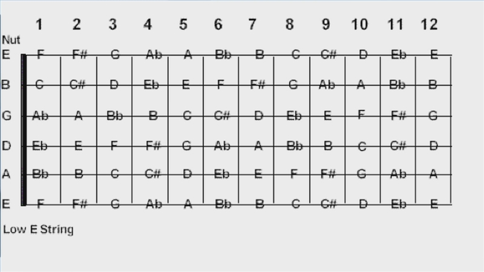
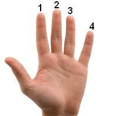

Guitar and Music Theory!
Have you always wanted to learn to play the guitar? This website will not only teach you the basics of the guitar but it will also teach you the fundamentals of music theory. First I will run down the notes on a sheet of music, how the guitar sets up those notes and how to play each note. Each string plays a different note. Starting off with the lowest string in sound, the order is E, A, D, G, B, and another E.
On the guitar, these are the notes that are being played on each fret and string. The musical alphabet goes from letters A-G and in between them you have sharp and flat notes. A sharp note is defined wit the symbol # and a flat notes is defined with something that looks like a lower case b. So on the guitar, the order is the same as shown above.
These are the 9 main and most commonly used notes of music. E G B D F, A good way
to remember this, and the way I learned it is Every Good Boy Does Fine
. This
is for the notes that are on the line. For the notes in between the lines, FACE, you
could just remember it as is.
When placing your fingers on the guitar neck you want to assign you fingers with numbers as shown below. In the reference section you can learn guitar chords and the numbers along the neck are what fingers you put on the corresponding fret and string.
Those are the basics of guitar. It may seem complicated but all it takes is effort and practice and you'll go on to more advanced concepts soon. The music reference page will teach you more about reading music and will include an array of guitar positions to learn and play around with.